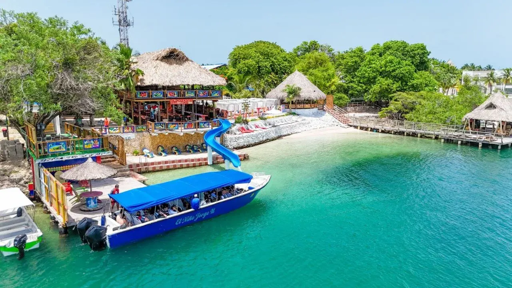
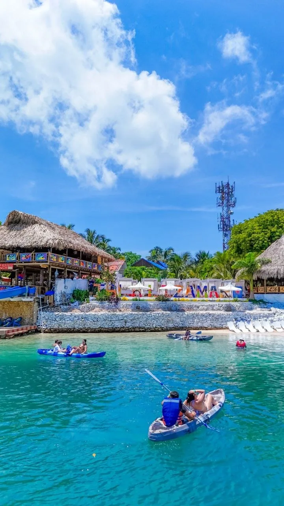
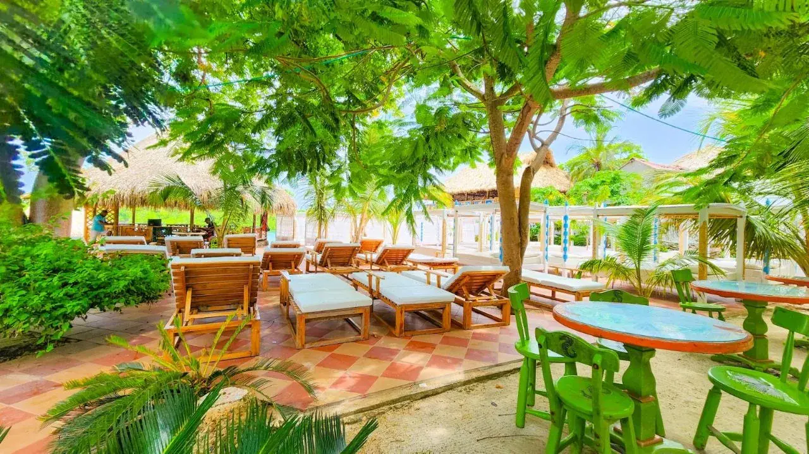
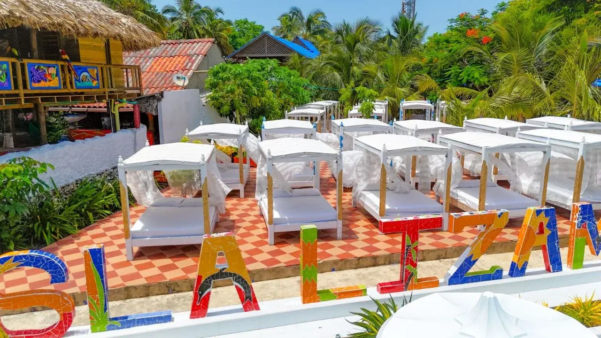
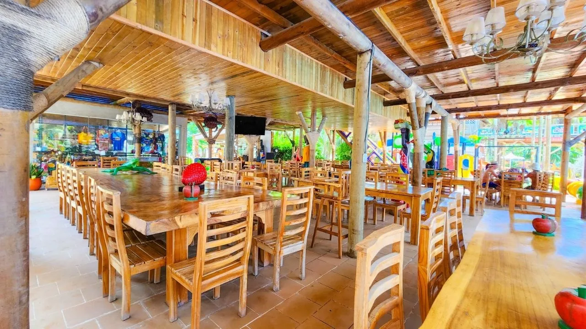

Mira un vistazo de la experiencia y luego explora la galería de fotos reales de Isla Lizamar.






Conoce Isla Lizamar, en Isla Grande, frente a la Isla Presidencial. Es una escapada pensada para disfrutar el mar Caribe con instalaciones cómodas, actividades para todas las edades y un almuerzo típico buffet, sin perder el acompañamiento de un guía bilingüe desde Cartagena.
Tu día en Isla Lizamar
Salida en lancha rápida
Navega desde Cartagena hacia Isla Grande en una embarcación con capacidad de 20 a 54 pasajeros y disfruta el recorrido panorámico por las Islas del Rosario.
Instalaciones para descansar y jugar
Relájate en el bohío de hamacas o las sillas asoleadoras, disfruta la piscina de agua dulce con cascada, la piscina infantil, el parque y el tobogán con salida al mar.
Almuerzo buffet y mar Caribe
Recibe un cóctel de bienvenida y disfruta un buffet con arroz con coco, patacones, ensalada, pescado frito, refresco y frutas tropicales.
Oceanario opcional
Visita la Isla San Martín de Pajarales, donde puedes conocer el Oceanario, ver el show de delfines y observar especies marinas. La entrada se paga aparte.
¿Qué incluye?
Valores no incluidos
Tarifas de referencia sujetas a cambio:
- Tasa de muelle: $29.000 COP por persona.
- Entrada al Oceanario: $40.000 COP por persona.
- Snorkeling: $50.000 COP por persona.
- Buceo con tanque: $300.000 COP por persona.
- Alquiler de cama de sol: $50.000 COP por persona.
Confirma el valor final y la disponibilidad de cada adicional antes de reservar.
Recomendaciones
Lleva traje de baño, toalla, protector solar, ropa cómoda y efectivo para consumos o actividades opcionales. Si quieres hacer snorkeling o buceo, pregunta por disponibilidad y tarifas actualizadas.
Preguntas frecuentes
¿El plan es apto para niños?
Sí. Hay piscina para niños, parque infantil y zonas de descanso. Consulta la tarifa infantil y las condiciones al reservar.
¿La entrada al Oceanario está incluida?
No. Es una visita opcional con costo adicional, sujeta a operación y disponibilidad.
¿El precio es definitivo?
$385.000 COP es el precio de referencia por persona recibido. La tarifa final, impuestos y horarios se confirman por WhatsApp antes del pago.